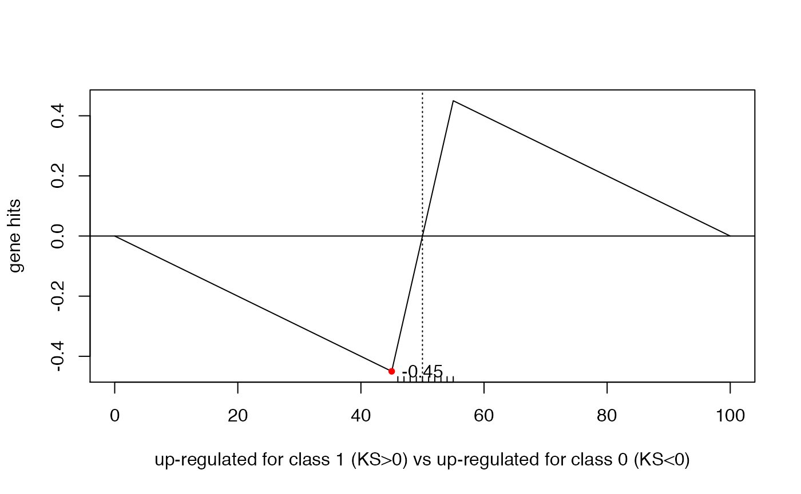
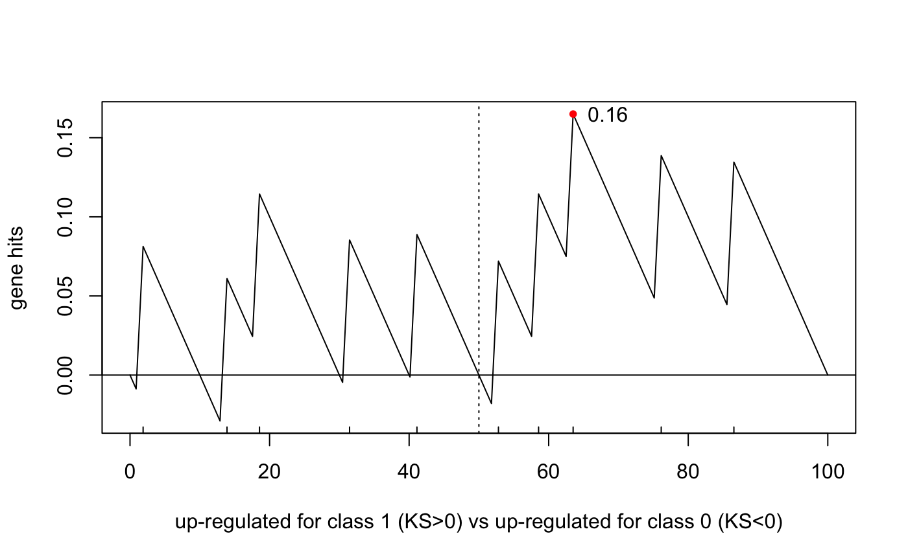

Here, we show some simple examples of use of the function ks.test, and of a simple function wrapper, ksGenescore, tailored for gene set enrichment analysis, which adds plotting capabilities and returns a signed score.
The ks.test function implements a Kolmogorov-Smirnov (KS) non-parametric test for the comparison of two distributions. That is, given two random samples, x and y, from unknown distributions, ks.test tests whether the two generating distributions are the same or not.
Here are few examples of use of the function. Comparing a random sample (from a Gaussian) to an actual distribution (uniform):
set.seed(123) # for reproducible results
x <- rnorm(100,mean=0,sd=1) # sample 100 random observations from a standard Gaussian
ks.test(x,"punif",min=-3,max=3) # test for difference from a uniform distribution U[-3;3]##
## One-sample Kolmogorov-Smirnov test
##
## data: x
## D = 0.2491, p-value = 8.153e-06
## alternative hypothesis: two-sidedThe function returns a score, the D statistic (between 0 and 1, with larger values indicating larger differences), and a p-value.
Next, we compare a random sample (from a Gaussian) to another random sample (from a Uniform):
set.seed(123) # for reproducible results
x <- rnorm(100,mean=0,sd=1) # sample 100 random observations from a standard Gaussian
y <- runif(100,min=-3,max=3) # sample 100 random observations from a Uniform in [-3,3]
ks.test(x,y) # test for difference between the two samples##
## Two-sample Kolmogorov-Smirnov test
##
## data: x and y
## D = 0.29, p-value = 0.0004453
## alternative hypothesis: two-sidedks.test for geneset enrichmentWe want to use the ks.test to determine the skewdness of the ranks of a given set of genes. The general problem is as follows: we have a gene expression dataset (say a 1000-gene x 100-sample dataset), and an associated phenotype of interest (say, 50 tumors vs. 50 normals). We want to test whether a given geneset (say, the geneset containing the genes in the Oxidative Stress pathway) is associated with the phenotype. By “associated”, we mean that the genes in the geneset are coordinatedly up-regulated in one of the phenotype’s classes.
This task can be addressed with the ks.test function:
If the geneset (Oxidative Stress) were not enriched with respect to the phenotype of interest (tumor vs. normal), we would expect the ranks of the geneset’s genes to be uniformly distributed between 1 and 1,000. If they are skewed to the left (beginning of the sorted list, large positive t-score), then we would conclude that they are enriched in the ‘tumor’ class. If they are skewed to the right (end of the sorted list, large negative t-score), we would conclude that they are enriched in the ‘normal’ class.
Let us assume that our geneset contains 10 genes, and let us assume we have already established their ranks with respect to a given phenotype, and let us denote with x the vector of their ranks. Here is how we can use ks.test to assess “skewedness”:
set.seed(123)
x <- 1:10 # the genes in the genesets have rank 1 to 10 (i.e., they have the 10 largest t-scores)
ks.test(x,"punif",min=1,max=1000) # test for their skewdness against a U[1;1000]##
## One-sample Kolmogorov-Smirnov test
##
## data: x
## D = 0.99099, p-value < 2.2e-16
## alternative hypothesis: two-sided
ks.test(x,1:1000) # test them against an actual vector of 1000##
## Two-sample Kolmogorov-Smirnov test
##
## data: x and 1:1000
## D = 0.99, p-value = 7.452e-09
## alternative hypothesis: two-sidedIn the first call to ks.test above, we used the one-sample test against a ‘punif’ distribution. In the 2nd call, we used the two-sample test with the second sample represented by the sorted list 1-to-1000. The latter formulation is more appropriate to take into account the ‘sample size’, i.e., the lenght of the sorted gene list (in these examples, our dataset has 1000 genes (more realistically, if using a whole-transcriptome profiling platform, such as Affymetrix or RNAseq, the length of the list will be closer to 20,000).
The sample size affects the extent of the statistical significance. Notice how the p-value becomes progressively smaller as the sample size increases:
x <- 1:10 # the genes to be tested have rank 1 to 10 (10 largest t-scores)
ks.test(x,1:100) # test them against a sample size of 100##
## Two-sample Kolmogorov-Smirnov test
##
## data: x and 1:100
## D = 0.9, p-value = 8.036e-07
## alternative hypothesis: two-sided
ks.test(x,1:1000) # test them against a sample size of 1000##
## Two-sample Kolmogorov-Smirnov test
##
## data: x and 1:1000
## D = 0.99, p-value = 7.452e-09
## alternative hypothesis: two-sided
ks.test(x,1:10000) # test them against a sample size of 10000##
## Two-sample Kolmogorov-Smirnov test
##
## data: x and 1:10000
## D = 0.999, p-value = 4.377e-09
## alternative hypothesis: two-sidedHenceforth, we will only use the two-sample option. Below, we test a set of 10 genes ranked toward the end of the sorted list, toward the middle, and a set actually randomly distributed.
x <- 991:1000 # the genes are last in the ranking (10 most negative t-scores)
ks.test(x,1:1000)##
## Two-sample Kolmogorov-Smirnov test
##
## data: x and 1:1000
## D = 0.99, p-value = 7.452e-09
## alternative hypothesis: two-sided
x <- 496:505 # the genes are smack in the middle of the ranking
ks.test(x,1:0000)##
## Two-sample Kolmogorov-Smirnov test
##
## data: x and 1:0
## D = 1, p-value = 0.0303
## alternative hypothesis: two-sided
x <- runif(10,min=1,max=1000) # the genes' ranks are actually uniformly distributed
ks.test(x,1:1000)##
## Two-sample Kolmogorov-Smirnov test
##
## data: x and 1:1000
## D = 0.209, p-value = 0.7801
## alternative hypothesis: two-sidedNotice that the KS score D is always positive, so whether the gene ranks are skewed to the left or the right, the returned D statistic is the same. Also, the function doesn’t give us insights into how the distribution of ranks actually looks like. For this, we defined a simple wrapper.
ksGenescore scriptWe defined a simple script (in BS831/R/ksGenescore.R) that builds upon ks.test but is specifically tailored to testing for the skewdness of the distribution of a set of ‘genes’ toward the beginning or the end of a sorted list. The script also plots the enrichment score, and returns a signed statistic indicating whether the set of genes is skewed to the left (>0) or to the right (<0). Since we are always testing one geneset against a given sample size, the input arguments are modified, with the first argument denoting the sample size (i.e., the length of the sorted list) and the second argument denoting the vector of genes’ ranks.
Few examples of use of ks.genescore follow. For visualization purposes, we use a reduced sample size of 100 (to better see the tickmarks corresponding to the genes’ ranks).
Testing whether 10 genes fall randomly in the 1:100 range.
# skewed to the left
ksGenescore(100,1:10,do.plot=TRUE) ##
## Two-sample Kolmogorov-Smirnov test
##
## data: 1:n.x and y
## D = 0.9, p-value = 8.036e-07
## alternative hypothesis: two-sided
# skewed to the right
ksGenescore(100,91:100,do.plot=TRUE)##
## Two-sample Kolmogorov-Smirnov test
##
## data: 1:n.x and y
## D = -0.9, p-value = 8.036e-07
## alternative hypothesis: two-sided
# skewed to the center
ksGenescore(100,46:55,do.plot=TRUE)
##
## Two-sample Kolmogorov-Smirnov test
##
## data: 1:n.x and y
## D = -0.45, p-value = 0.05035
## alternative hypothesis: two-sided
##
## Two-sample Kolmogorov-Smirnov test
##
## data: 1:n.x and y
## D = 0.16497, p-value = 0.9274
## alternative hypothesis: two-sidedNotice that the KS test, when used against a uniform distribution, simply tests deviation of an observed sample from a uniform distribution. Thus, in the examples above, the “geneset” 46:55 (of ten genes ranked in the middle and adjacent to each other) is also unlikely to come from a uniform distribution, hence the significant p-value (although weakly so).